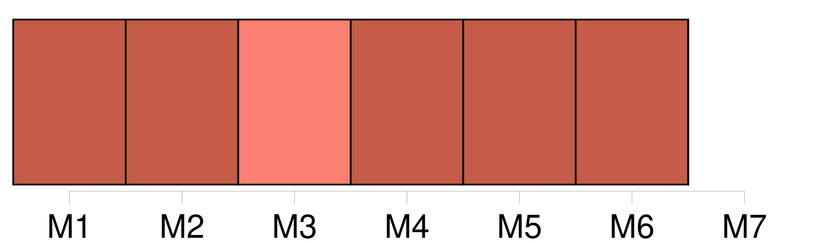
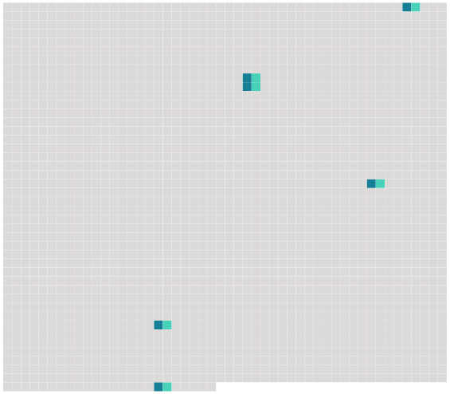

Longueur nb maillons : 6 mentions |
 |
Et comme l'institutrice ne paraissait pas convaincue, il reprit, la voix plus dure : [16 phrases] Ses jambes étaient devenues aussi lourdes que sa tête, dans laquelle la voix triste et dure de son grand-père redisait sans cesse : « Au frais matin les coqs ont chanté sa naissance, et, au soir tombant, la cloche de l'église a sonné le glas pour [son père] et sa mère. [3 phrases]
Ainsi, comme son ami Noël et les autres enfants, elle avait eu [un père] et une mère, et pour eux le glas avait sonné, comme il sonnait pour tous ceux qui mouraient au village. [25 phrases]
Et c'est ainsi qu'il pouvait apprendre à sa petite camarade que sa mère était morte en la mettant au monde et que [son père] , fou de chagrin, s'était sauvé de la maison pour aller se noyer dans l'étang de la sapinière. [41 phrases]
C'est peut-être [ton père] et ta mère, le jour de leur mariage? [18 phrases] Jamais Douce ne l'avait vu si plein, et tout de suite elle pensa qu'il devait être ainsi le jour où [son père] s'y était noyé. |
 |
Il est possible de télécharger la ressource sur la page Ortolang |
Si vous avez des questions ou vous voyez des erreurs, merci d'envoyer un mail à silvia.federzoni89@gmail.com |